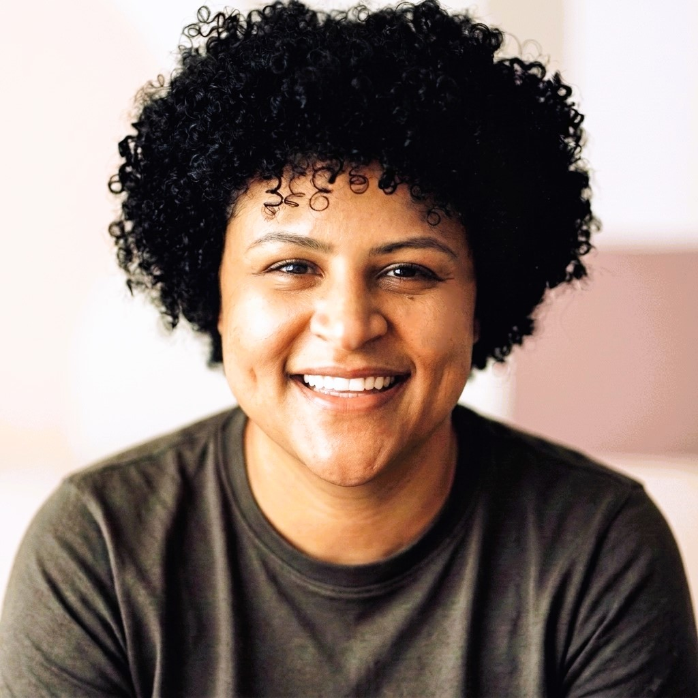
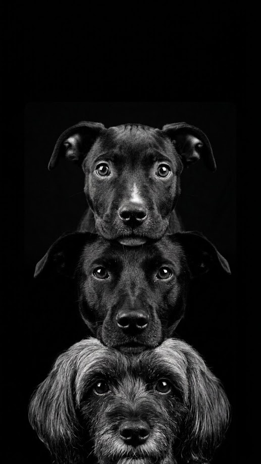
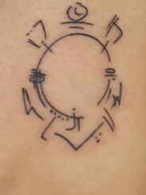
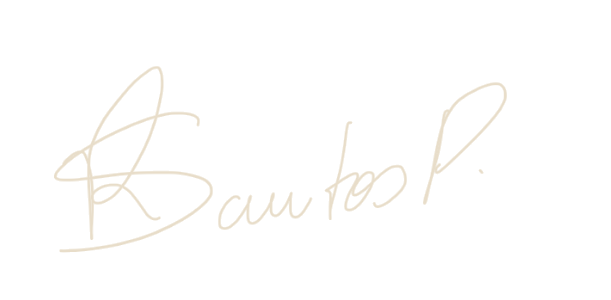

Observabilidade como alavanca
Produto observável tem vantagem competitiva. O usuário que enxerga o ciclo completo reclama menos, concilia melhor, confia mais.
Como Product Manager, minha especialidade é estruturar produtos que exigem alta confiabilidade e observabilidade, como plataformas e APIs. Trabalho na intersecção entre tecnologia e comportamento humano. Venho do setor de meios de pagamentos, mas aplico um olhar de discovery que busca entender o que as pessoas realmente precisam, para que a complexidade do sistema nunca seja um obstáculo para a entrega de valor.
Abaixo, descrevo os quatro princípios fundamentais que guiam minha tomada de decisão em produtos de alta complexidade técnica.
Produto observável tem vantagem competitiva. O usuário que enxerga o ciclo completo reclama menos, concilia melhor, confia mais.
Em decisão com risco assimétrico, barreira automatizada (idempotência, Hard Limits, guardrail) protege melhor que treinamento.
Sinal não mora só em entrevista com cliente. Mora em feira, em caixa de sugestões, em pedido recorrente de aumento de limite de API.
Mudança imposta é a única janela politicamente viável para reforma estrutural: dívida técnica, repricing, reposicionamento.
Selecionei quatro entregas que traduzem complexidade técnica em movimento de negócio. Cada frente representa um domínio de decisão distinto. Clique para expandir o detalhamento STAR e métricas.
Produto fundador sobre kernel legado, com go-live regulatório obrigatório em 15/03/2024 e mais de 50 IPs do mercado atrasadas. Representei a fintech na cadeira de Produto do GT da Núclea por mais de 15 meses.
Pix em crescimento, boleto em declínio aparente, pressão interna para "defender o boleto". Um exercício de discovery que resultou em uma terceira via, vencedora do Prêmio Banking Transformation Cantarino.
Tarifa plana histórica mascarava emissores com margem negativa. Redesenho de política de preços sensível a canal e segmento, com trava técnica que impede fechamento no prejuízo.
Três entregas em cinco meses como PM de BackOffice Accounting em fintech com TPV 2024 de R$ 43,5 bi. Automação contábil, ativação de IA Generativa e ponto focal na primeira auditoria Big Four.
Fintech foi onde construí base técnica e regulatória. Mas os princípios que ancoram minhas decisões são transferíveis para qualquer mercado de média e alta complexidade, onde tecnologia e comportamento humano se cruzam sob risco.
Acredito que gerir produtos é, no fundo, saber ler as entrelinhas das necessidades humanas.Minhas camadas



Gosto de trocar com pessoas que pensam produto, seja para discutir decisões e riscos, compartilhar referências ou simplesmente expandir a rede. Me encontre nos canais abaixo.

Regiane PereiraObrigada pela visita. ♥